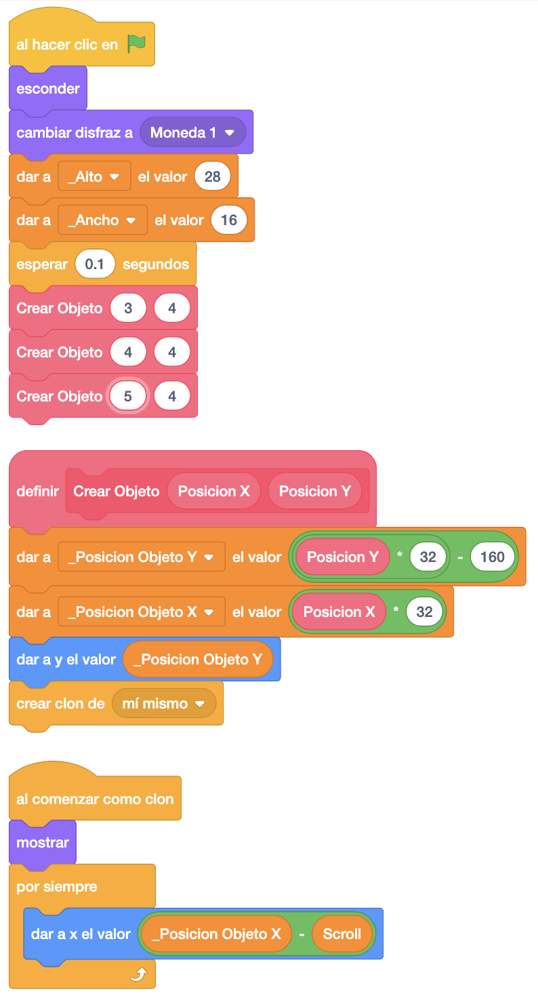
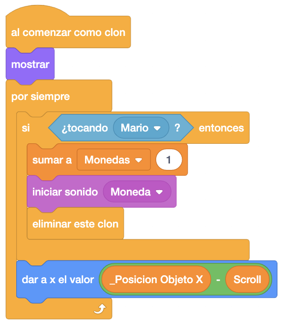
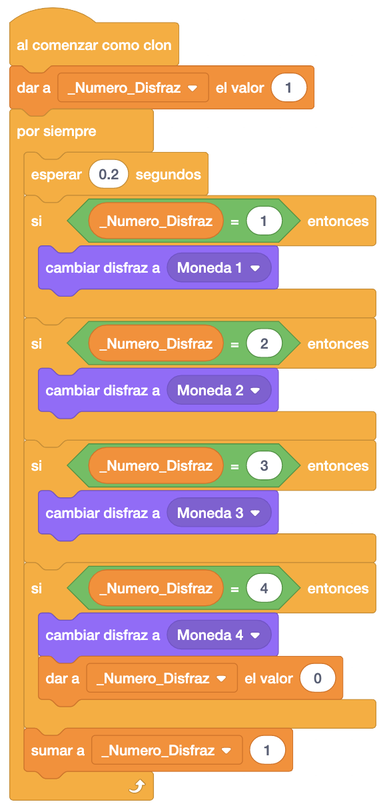

En esta fase, le dejamos el control al alumno para que termine de añadir los objetos restantes y termine el
juego.
Empezaríamos por añadir las monedas. Copiamos como en el suelo toda la programación de la plataforma. En el
bloque "Al Hacer Clic En La Bandera" le ponemos a la moneda el primer disfraz, le damos los valores de alto
y ancho y creamos las monedas encima de la primera plataforma.
En cuanto al bloque de "Al Comenzar Como Clon", quitamos todo lo que hay dentro del bucle menos la asignación
de la posición "X" a Mario, ya que no tenemos que subirnos ni identificar por donde le damos a las monedas.

Ahora vamos a añadir en el bloque "Al Comenzar Como Clon" que si tocamos a Mario, sumaremos 1 a las monedas
recogidas en la nueva variable "Monedas", haremos sonar el sonido "Moneda" y eliminaremos el clon de la
moneda.
Esta nueva variable "Monedas" también la pondremos a "0" en el bloque "InicializarJuego" de Mario, donde le
damos el valor inicial a las variables.

A continuación crearemos un nuevo bloque "Al Comenzar Como Clon" donde haremos la gestión de los disfraces de la moneda para que parezca que dá vueltas continuamente. En este caso crearemos una variable para controlar el disfraz que tenemos que poner en cada momento a la que llamaremos "_Numero_Disfraz".

Con esto daremos por terminada la moneda salvo la gestión de las monedas que aparecen cuando le damos al
bloque moneda, que haremos posteriormente.
El juego iría quedando así.
Podemos ver el juego terminado con las monedas pulsando aquí.